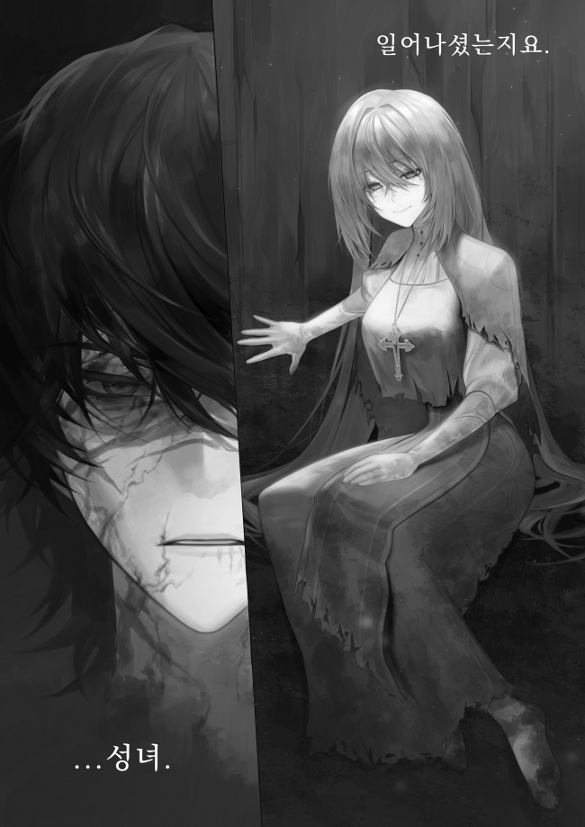
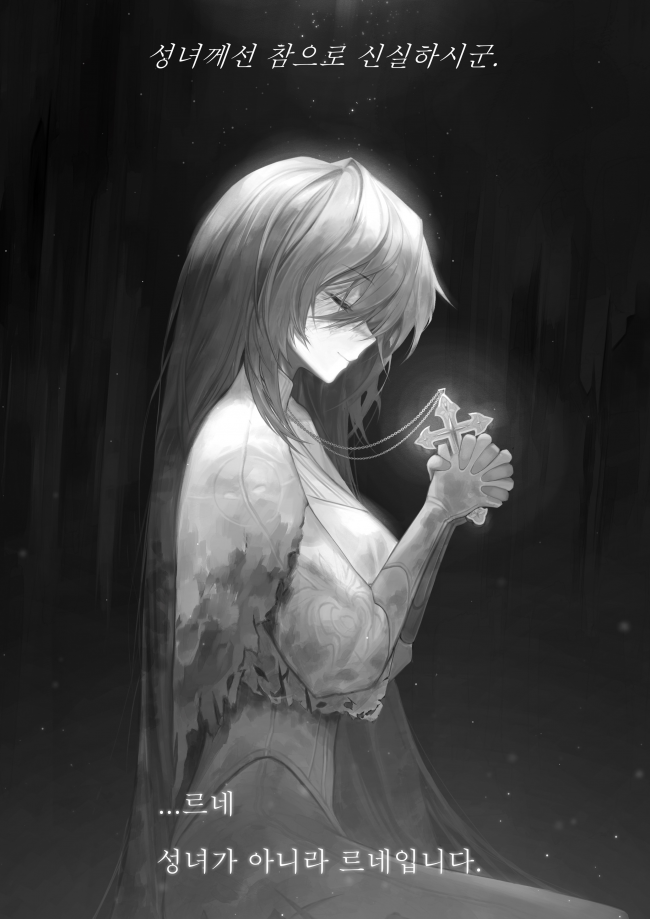

贫民窟(1)
一阵剧痛让他感觉整个身体仿佛要崩溃了。维拉睁开了眼睛。
“啊…”
从他嘴里发出的声音干涩沙哑，似乎随时都会干涸。
他感到一阵剧痛的头痛，耳边嗡嗡作响。水滴顺着他的皮肤滴落，加重了他的不适感，每一次呼吸都带来一阵撕裂他胃部的剧痛。
身体处于最糟糕的状态，加上不舒服的感觉。
这是怎么回事？维拉思索了片刻，然后略微转过头，环顾四周。
“这是…”
一个黑暗的地方。
在一间用木板堆砌成型的房子里，水渗透进来，因为木板无法完全阻挡雨水和风。
房子内部有几件破旧的衣服和几个锈迹斑斑的铜碗。
墙上爬着虫子，泥水从屋顶不断滴落下来。
闷热的气味和嘎吱作响的声音似乎是由它们引起的。
维拉扫了一眼，立刻知道这是在哪里。
……他不可能不知道。
“贫民窟。”
他睁开眼睛的地方是贫民窟，那是他出生和长大的地方，被称为“帝国的毒瘤”。
维拉环顾四周，心中浮现出一个问题。
为什么我在这里？
维拉回想起失去意识前的情景。
我确定…
“我一定是受到了诅咒，快要死了。”
这是多年来他犯下的诸多罪孽带来的诅咒。
魔王被征服三年后，那些结束了漫长战争的英雄们试图清理大陆内部。
他拼命躲避，但最终在临死之际被诅咒。
然而，奇怪的是，他并没有感受到一直在吞噬他身体的诅咒。
他唯一能感受到的是过去战斗留下的伤痕带来的疼痛。
维拉试图回忆他为什么躺在那里，为什么他在贫民窟的入口处倒下，但却想不出任何合乎逻辑的解释。因此，他立即摆脱了这些想法，闭上了眼睛。
不管他是被人所救还是被追杀他的人救助，他现在什么都做不了，所以没有必要再继续纠结这件事。
这是一个非常破旧的空间，但即便如此，在这个空间的各个角落里都能感受到生活的痕迹。
他不必考虑太久，因为很快他就会遇到住在这的人。
当维拉评估完情况后，他闭上眼睛等待着。随着“咯吱咯吱”的声音，小屋的门打开了。
维拉一听到声音就睁开眼睛看向门口。
谁进来了？
‘…女人？’
那是一个长相丑陋的女人，她身穿破烂的长袍，裸露的皮肤上到处都是烧伤的疤痕。
长袍兜帽下露出的白发沾满了污垢，她的双脚沾满了泥水，似乎没有穿鞋。
看起来她好像看不见。从她失去光芒的蓝眸，以及她靠在墙上摇摇晃晃的走路姿势，他可以看出来。
她是谁？
维拉沉思了一会儿，然后听着她走动时发出的叮当声。
‘叮。’
那是金属物品相互摩擦的声音。
这是什么？硬币？饰品？
维拉开始列举浮现在脑海中的事物，但直到她坐在地上后才意识到这个声音的来源。
女人烧伤的后颈上有一条铂金色的项链。
‘是饰品吗？’
维拉的眼睛眯了起来。
这是一个居住在如此破旧房屋的人无法负担得起的珍贵饰品。
维拉怀疑这个女人可能为了这条项链而出卖了自己。
这是一个非常有说服力的理由。那些想要我性命的人中，有很多人有能力支付这样一条珍贵的项链。
维拉紧张地看着她，当他低下头看到那条项链的形状时，他深吸了一口气。
因为，那条露出来的项链，连维拉都非常熟悉。
女人脖子上挂着的东西，竟然是……
‘圣国的罗萨里奥。’
只有圣国地位最高的人才能拥有的白金色念珠。
‘赝品……不。’
凭借多年来积累的知识，他能立刻辨别出它。
‘这是真的，不是交易。’
这是因为这个白金色念珠的价值无法评估。只要交易那串念珠，就会被整个圣国追捕。
脑海中浮现的念头是，这名女子是圣国的人。
当他继续思考时，维拉脑海中闪过一个身影。
“白发。失明。铂金色的念珠。”
并不是没有人具有类似的特征，但维拉不知为什么无法忽视他脑海中出现的推论。因此，他神色紧张地看着她，然后轻轻舔了舔嘴唇。

“…圣女。”
他发出一声嘶哑的声音。
听到维拉的声音，女人颤抖起来。
维拉全身颤抖，他断定自己的推理是正确的，因为她的指尖在抽搐。
维拉注意到圣女看上去比之前更紧张了。圣女转过头来对着维拉说道。
“你醒着么？”
一种清晰得不容置疑的声音。这是维拉听到圣女的声音时的第一个想法。
说完这句话，圣女看向维拉，脸上的肌肉抽搐着，试图做出表情。
烧伤的痕迹在肌肉的运动下诡异地扭曲着，但维拉可以感觉到这个表情意味着微笑。
这是因为她的氛围。
他听到的平静语调，以及那尽管因失焦而变得浑浊，但仍直视着他的方向的双蓝色的眼睛。还有似乎在努力向上扬起的脸部肌肉。
这一切让维拉觉得那是一个微笑。
维拉看着破烂长袍下露出的那张狰狞、烧伤的脸，想到了一个问题。
“……我听说你死了。”
圣女在与魔王的最后一战中战死。因为是如此有名的事情，所以维拉自然也知道。
可本来应该死的她怎么会在这里？
圣女微笑着，俏皮地回答了维拉疑惑的问题。
“如果是圣女的话，她确实已经死了。”
“那你呢？”
“我是贫民窟的乞丐。”
虽然她说得很拐弯抹角，但维拉明白了她的意思。
”……在圣国举行的葬礼是假的。“
“你不能说它是假的。无论如何，圣国的圣女确实已经死了。”
圣女一边说着一边伸出手臂，触碰了维拉的胸口。
紧接着，维拉发出一声呻吟。因为圣女的手摸过了受伤的肋骨。
“啊啊……！”
“很疼吗？”
维拉咬紧牙关，瞪着圣女。
不能这么快就暴露出弱点。想到这里，维拉继续保持沉默。圣女将头转向他，再次抚摸维拉的身体。
“应急处理已经完成了，不过……你还得在这里呆一段时间。可能会不舒服，但请耐心等待。”
声音里充满了关切。这时，维拉警惕了起来。
‘她的目的是什么？’
看起来她并不是追杀他的人。
他看着圣女，心里有太多的疑问，无法给出合适答案。
圣女为何还活着？你怎么会这样？你是怎么找到我的？还有你知道我的真实身份吗？
无数的疑问闪过，维拉看着圣女，决定让她一一解答。
“诅咒是被圣女解除了吗？”
“幸运的是，我能够做到。”
这是一个模糊的肯定答案。
“你能做到？”
“主在照顾我。”
她烧伤的脸上出现了皱纹。维拉认出那是一张笑脸。
维拉看着那笑容，听到‘能够’两个字，拓展了思路。
因为维拉知道圣女的能力。
虽然他身上的诅咒极其恶毒，但如果是圣女的能力，她应该可以轻松地解除诅咒。
也就是说，没有理由包含“能够”这个词。
维拉保持沉默，看着圣女。沉思了一会儿，他终于明白了圣女话中的意思。
“……你失去了力量，不是吗？”
“说失去了是错的。从一开始它就不是我的。”
圣女微笑着，语气平静地说道。
“我只是把借给我的东西还回去而已。”
“是你自己放弃的吗？”
“既然没有理由拥有，自然要归还。”
维拉听到她的回答，忍不住笑了起来。
因为他觉得自己的一些疑问得到了解答。
‘她一定是自愿假死的。’
不存在‘为什么？’的问题。
这是因为如果你认识圣女，光看她那平静的脸庞就能明白。
“你一定厌倦了战争。”
当魔王消失的时候，如果圣女还在，大陆各国肯定会为了圣女再次发动战争。
为什么？圣女的能力是值得他们这么做。
圣女一定是想要避免这种情况，而她的解决办法就是抹去自己的存在。
正当他继续思考的时候，圣女张开了嘴。
语气有些低沉。
“……你知道的真多。”
“那么，你要杀我吗？”
维拉看着圣女问道。
他的身体已经处于最糟糕的状态。就算圣女现在要掐死他，他也根本无法反抗。
……说实话，就算死在这里，他也没有遗憾。确实，他过着该死的生活，这样的结局也在意料之中。
维拉闭上眼睛，想象着圣女伸手掐住他的脖子。
这时。
“没有理由杀人。”
圣女张开了嘴。
维拉听到这句话皱起了眉头，睁开了眼睛。目光尽头的圣女，神色平静。
“为什么？”
“你为什么认为我会杀你？”
“如果有人知道你的真实身份，那不是有问题吗？”
“只要你不说。”
“如果我要传播这个消息怎么办？”
“这将是不幸的。”
答案流畅如水。维拉再次审视着她的表情，希望能理解圣女的意图，但在她那张被烧伤的脸上却看不出任何迹象。
沉默持续着，等了许久，维拉都没有回应，圣女短促地吸了口气，继续说道。
“暂时放松一下吧。你身体状况不太好。”
“如果你知道我是谁，你还会愿意这样对我吗？”
“我应该知道吗？”
“你有没有想过，圣女所治愈的人，可能是一个将人撕成碎片的杀人犯？”
“那将非常不幸，但我没有勇气对病人视而不见。我能做的就是祈祷你不是杀人犯。”
看到圣女靠在小屋的墙上说出这句话后，维拉开始笑了起来。
圣女靠在那里，从胸前拿出念珠，紧紧地握着，闭上了眼睛。

看起来像是在祈祷。
看到这一幕，维拉讽刺地发表了一番言论，然后毫无缘由地感到胃部一阵刺痛。
“圣女，你果然是忠诚的。”
“……蕾妮。”
“什么？”
“不是圣女，是蕾妮。”
一直都那么和蔼可亲，可一提到自己的名字，她却出人意料地固执。
维拉闭上了眼睛，心想圣女确实是个奇怪的人。